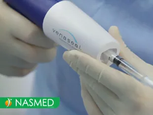
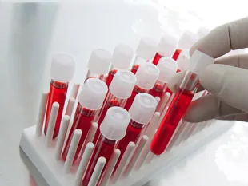
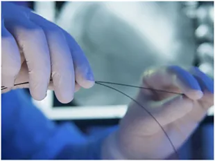

1. Czy zabieg skleroterapii z wykorzystaniem piany jest równie skuteczny w przypadku dużych i małych żylaków?
Pomimo, iż skleroterapia kompresyjna jest jedną z bardziej uniwersalnych metod likwidowania żylaków, to jednak nie należy ona do metod z wyboru w przypadku usuwania dużych i krętych poszerzeń żylnych. Żylaki głównych pni o dużym stopniu rozdęcia zwykle leczy się metodami o większej skuteczności, takimi jak: wewnątrzżylna ablacja laserowa (EVLA), klejenie żylaków (Venaseal) czy postępowanie chirurgiczne. Skleroterapia, w szczególności przy pomocy igły, w tych sytuacjach bywa traktowana jako metoda uzupełniająca, drugiego rzutu. Długoletni efekt całkowitego zamknięcia głównych pni żylnych przy żylakach średniego i dużego kalibru po zabiegach echoskleroterapii iniekcyjnej pianą to maksymalnie ok. 70-75%. W Klinice Flebologii-NASMED dla poprawy długoletniej efektywności zabiegów skleroterapii w razie konieczności posiłkujemy się również metodami wewnątrzżylnego dojścia do żylaka i tzw. znieczuleniem tumescencyjnym (jest to tzw. skleroterapia kompresyjna cewnikowa pod kontrolą USG wspomagana tumescencją). Więcej informacji na ten temat znajdziecie Państwo pod zakładką „Skleroterapia kompresyjna” i „Leczenie hybrydowe„.
2. Czym różni się skleroterapia piankowa od mikroskleroterapii?
Skleroterapia piankowa (sklerozant jest podawany w postaci spienionej z dodatkiem powietrza lub dwutlenku węgla) służy do zamykania żył większego kalibru (poszerzonych żył siatkowatych oraz żylaków małych i średnich rozmiarów). Zastosowanie leku sklerotyzującego w postaci spienionej (ang. foam) pozwala na skuteczniejsze i szybsze zamknięcie naczynia. Leki sklerotyzujące mające postać płynną podawane są przez lekarza do drobnych żył siatkowatych i pajączków naczyniowych, po to być zminimalizować ryzyko działań niepożądanych i lepiej kontrolować zamykane łożysko naczyniowe.
Mikroskleroterapię w Klinice Flebologii-NASMED wykonujemy na dwa sposoby: z użyciem płynu i tzw. mikropiany. Do tego typu zabiegów używamy najcieńszych igieł na rynku.
3. Czy można wykonywać zabiegi skleroterapii w ciąży i w okresie karmienia piersią?
Zabiegi skleroterapii są przeciwwskazane w ciąży i w okresie połogu, ze względu na fakt, iż stosowane leki obliterujące nie zostały zarejestrowane do stosowania w tych okresach. Ponadto trzeba pamiętać, że w tych szczególnych dla kobietach okresach jej ciało oraz układ naczyniowy dynamicznie się zmieniają, stąd wszelka ingerencja jest niewskazana. Zaleca się, by w czasie ciąży Panie nosiły specjalnie dobrane profilaktyczne wyroby uciskowe.
W okresie karmienia piersią wykonywanie zabiegów skleroterapii jest dopuszczalne. Trzeba pamiętać, by w okresie bezpośrednio po podaniu leku obliterującego (do 24h od zabiegu) kobieta nie karmiła dziecka piersią. W tym czasie podaje się niemowlakom mleko uprzednio zamrożone. W ciągu pierwszej doby od zabiegu można bez żadnych przeciwwskazań odciągać pokarm, po to by nie doprowadzić do zaburzeń w procesie laktacji.
4. Czy “pajączki” naczyniowe to problem wyłącznie estetyczny?
Teleangiektazje żylne, zwane potocznie “pajączkami”, bywają często pierwszym objawem przewlekłej niewydolności żylnej. Wszystko zależy od tego, w jakim kontekście sytuacyjnym się pojawiły, jak wyglądają, jak są rozlokowane, a także jaka jest dynamika ich powstawania.
Ważne jest, by nie bagatelizować tego typu zmian na nogach i zaraz po ich pojawieniu się udać się po poradę do lekarza flebologa w celu wykonania badania USG-Doppler żył kończyn dolnych i zbadania ich natury.
5. Jakie stany chorobowe są przeciwwskazaniem do stosowania terapii uciskowej?
Bezwzględnie unikać należy stosowania kompresji u osób z zaawansowaną chorobą miażdżycową tętnic kończyn dolnych. Stąd ważne jest, by w przypadku jakichkolwiek podejrzeń klinicznych zweryfikować stan unaczynienia nóg Pacjenta w badaniu USG Doppler tętnic kończyn dolnych.
Unikamy stosowania kompresji również u Pacjentów z zaawansowaną niewydolnością serca, a także w stanach ostrych, takich jak: wszelkie zmiany zapalne na nogach, w tym w zakażonym zapaleniu zakrzepowym żył. Także siniczy obrzęk bolesny – zagrażająca zgonem ostra i masywna forma zakrzepicy żył głębokich – jest stanem, w którym unikamy kompresji na wstępnym etapie leczenia.
Istnieje kilka stanów będących względnymi przeciwwskazaniami do stosowania kompresji, są to m.in.: neuropatia cukrzycowa, zapalenia stawów czy silne uczulenie na materiał, z którego wykonane są wyroby.
6. Na czym polega stosowane w Klinice Flebologii-NASMED tumescencyjne znieczulenie nasiękowe?
Jest to coraz szerzej stosowana metoda znieczulenia miejscowego wykorzystywana m.in. w czasie różnych rodzajów zabiegów na układzie żył powierzchownych (np. w przypadku skleroterapii, laseroterapii czy operacji chirurgicznych). Polega ona na podawaniu dużych ilości zobojętnionych i silnie rozcieńczonych środków znieczulających. Stosowanie tumescencji zwiększa skuteczność leczenia, jego bezpieczeństwo oraz poprawia samopoczucie Pacjenta w trakcie zabiegów termicznych, takich jak laseroterapia (EVLA) czy radioablacja (EVRF).
7. Dlaczego po ciąży żylaki powstają częściej na lewej kończynie?
Związane jest to z anatomicznym przebiegiem naczyń w miednicy. Lewa żyła biodrowa wspólna, krzyżuje od tyłu prawą tętnicę biodrową wspólną (tzn. jest uciskana przez nią, co utrudnia odpływ krwi i prowadzi do zmian w jej świetle). Tłumaczy to również 3-8 razy częstsze występowanie zakrzepicy żylnej po stronie lewej (tzw. zespół May-Thurnera). W Klinice Flebologii-NASMED zajmujemy się diagnostyką i małoinwazyjnym leczeniem tego typu schorzeń uciskowych żył miednicy. W ciąży zalecamy leżenie w pozycji na lewym boku, po to by odblokować odpływ krwi przez żyłę główną dolną uciskaną przez powiększoną macicę. Zmniejsza to objawy kołatania serca u matki i poprawia ukrwienie macicy oraz łożyska.

8. Jakie zalety w stosunku do innych metod leczenia ma technika zamykania żylaków kończyn dolnych przy użyciu kleju podawanego wewnątrznaczyniowo (metoda VenaSeal)?
Do głównych zalet zabiegu klejenia metodą VenaSeal, wyróżniających ją na tle innych współczesnych metod leczenia żylaków kończyn dolnych, zaliczamy niewątpliwie: wysoką skuteczność metody w likwidowaniu dużych pni żylnych (alternatywa dla metod chirurgicznych), brak występowania niekorzystnych efektów nagrzewania tkanek w czasie trwania procedury (inaczej niż przy laseroterapii czy radioablacji), bezbolesność zabiegu, brak konieczności stosowania pończoch uciskowych w okresie pozabiegowym, szybki powrót do codziennych obowiązków oraz bardzo małe ryzyko przebarwień (dobra metoda do zastosowań w okresie letnim!).
9. Czy po zabiegu skleroterapii kompresyjnej należy unikać ruchu i wysiłku fizycznego?
Aktywność fizyczna po skleroterapii jest jak najbardziej wskazana. Zaraz po zabiegu zalecamy naszym Pacjentom intensywny spacer, po to, by uruchomić „pompę mięśniową” podudzi i wspomóc odpowiednią redystrybucję sklerozantu (wstrzykiwanego w czasie skleroterapii leku) w obrębie zamykanych naczyń. Przez kolejne dni po zabiegu zalecamy umiarkowaną aktywność fizyczną, długie spacery, nordic walking, a po zdjęciu wyrobów kompresyjnych np. pływanie. Jeśli chodzi o wytężony wysiłek fizyczny, to na pewno należy unikać intensywnych ćwiczeń siłowych. Należy stronić od wszelkich form aktywności, doprowadzających do przegrzewania skóry.
10. Kiedy można spodziewać się poprawy stanu nóg po zabiegu skleroterapii?
Objawy związane z niewydolnością żylną, tj. ból, ociężałość, obrzęki podudziu czy skurcze nocne, znikają najczęściej zaraz po wykonanym zabiegu. Na poprawę estetyczną trzeba trochę poczekać. Mniejsze żyły i pajączki znikają w czasie od 2-3 tygodni do 3-6 miesięcy. Większe poszerzenia podskórne oraz żylaki potrzebują więcej czasu, nawet do 6-9 miesięcy. Czasem na przebiegu dużych pni żylnych mogą utrzymywać się niewielkie ślady w postaci zasinień, zwykle jednak znikają. Z naszego doświadczenia wynika, iż nie trwa to dłużej niż 8-12 miesięcy.
11. Jak się przygotować do badania USG Doppler żył kończyn dolnych?
Badanie dopplerowskie układu żylnego kończyn dolnych zazwyczaj nie wymaga specjalnego przygotowania. W przypadku Pacjentów cierpiących z powodu przewlekłej niewydolności żylnej (z rozbudowanymi żyłami siatkowatymi i pajączkami żylnymi, z żylakami głównych pni żylnych lub ich odgałęzień czy niegojącymi się owrzodzeniami w obrębie dolnych partii podudzi) badanie przeprowadzane jest zazwyczaj w pozycji stojącej. Taki sposób sprawdzania układu żylnego zapewnia najbardziej wiarygodną ocenę. W sytuacjach bardziej skomplikowanych (np. u Pacjentów z zespołem pozakrzepowym, podejrzeniem zakrzepicy czy nałożeniem się kilku patologii jednocześnie) często lekarz stosuje zmodyfikowany sposób badania.
Bywa również tak, iż badanie układu żylnego kończyn dolnych musi być poszerzone o badanie żył w obrębie miednicy i jamy brzusznej. Takie badanie, wykonywane dodatkowo przez powłoki brzuszne, wymaga specjalnego przygotowania i współpracy oddechowej ze strony Pacjenta. Do badania USG Doppler pod kątem oceny wydolności żylnej miednicy należy być przygotowanym równie dobrze jak do badania USG jamy brzusznej. Więcej na ten temat znajduje się na podstronie PRZYGOTOWANIE DO BADANIA USG.
12. Jak należy postępować po zabiegu laserowego zamykania żylaków (EVLA) na nodze?
Po zabiegu EVLA (ang. endovenous laser ablation) wykonywanym z użyciem nowej technologii PainLess (w Klinice Flebologii-NASMED do laseroterapii wewnątrzżylnej używany jest system ELVeS) można niemalże natychmiast wrócić do normalnej aktywności życiowej. Unikać należy jedynie nadmiernego wysiłku fizycznego, w szczególności dźwigania ciężkich przedmiotów. Większość osób poddanych zabiegowi systemem ELVeS nie odczuwa bólu, a jedynie mała część Pacjentów zgłasza niewielki dyskomfort, niewymagający zażywania leków na receptę. Od kilku do kilkunastu dni po zabiegu mogą wystąpić niewielkie zasinienia, prześwitujące przez skórę. Przez okres 7-21 dni (dokładne zalecenia przedstawi lekarz po wykonaniu procedury) należy stosować odpowiednio dobraną pończochę uciskową, wspomagającą proces gojenia i włóknienia niewydolnej żyły poddanej zabiegowi. W Klinice Flebologii-NASMED pończocha wliczona jest w cenę zabiegu laserowego.

13. Jak należy przygotować się do zabiegu likwidowania żylaków? Czy przez zabiegiem wewnątrzżylnym konieczne jest wykonanie jakichś badań laboratoryjnych?
Przed zabiegiem echoskleroterapii iniekcyjnej z podaniem piany w większości przypadków nie jest wymagane specjalne przygotowanie ze strony Pacjenta. W sytuacjach wyjątkowych lekarz poinstruuje Pacjenta o konieczności wykonania odpowiednich badań dodatkowych.
Jeśli chodzi o inne małoinwazyjne zabiegi wewnątrzżylne, w czasie których zamykane są większe żylaki (laseroterapia lub klejenie metodą VenaSeal, zabiegi hybrydowe), jak również przed procedurami z zakresu chirurgii klasycznej, zawsze wymagane jest wykonanie kilku oznaczeń laboratoryjnych i zastosowanie się do poniżej przedstawionych zaleceń.
Pełną listę badań laboratoryjnych przedzabiegowych znajdziecie Państwo poniżej. Jeśli któreś z oznaczeń nie będzie konieczne, taką informację przedstawi Państwu lekarz na wizycie kwalifikującej do zabiegu.
Rutynowo u naszych Pacjentów oznaczamy:
– grupę krwi z czynnikiem Rh (do wglądu oryginalny druk)
– morfologię z rozmazem
– czasy krzepnięcia (INR, aPTT)
– elektrolity (Na+, K+)
– poziom kreatyniny
– glikemię na czczo (poziom glukozy we krwi)
– przeciwciała anty-HCV i HBsAg (lub przeciwciała anty-HBs u osób wcześniej zaszczepionych)
Pobranie krwi do badania i przeprowadzenie analizy wszystkich niezbędnych parametrów z listy można wykonać na miejscu w Przychodni NASMED.
Ponadto należy pamiętać, iż:
– Pacjenci przyjmujący na stałe leki zmniejszające krzepliwość krwi (takie jak: Acard, Aspiryna, Warfin czy Acenokumarol) konsultują zawsze ze swoim lekarzem celowość zmodyfikowania ich dawki lub ewentualne odstawienie
– w dniu wykonania procedury Pacjent powinien zgłosić się 15-20 minut wcześniej w celu zapoznania się z formularzem zgody do zabiegu
– u Panów zalecamy wygolenie (ew. wydepilowanie) owłosienia na skórze w okolicy dostępu do żylaka
– strój oraz obuwie pozabiegowe powinny być na tyle wygodne, by po wykonanej procedurze zapewniony był komfort poruszania się z założoną na nodze pończochą uciskową (zasadniczo nie dotyczy to zabiegów klejenia żylaków metodą VenaSeal, po których bardzo rzadko zakładana jest kompresja)
– na zabiegi wewnątrznaczyniowe typu laseroterapia systemem ELVeS, VenaSeal (klejenie żył) oraz chirurgiczne usuwanie żylaków należy zjawić się z osobą towarzyszącą w wieku dorosłym
14. Jakie jest ryzyko wystąpienia powikłań po zabiegu wewnątrznaczyniowego zamykania żylaków laserem (EVLA) przy użyciu systemu ELVeS Radial?
Zabieg laserowy przy użyciu systemu ELVeS (ang. Endo Laser Vein System) jest procedurą małoinwazyjną. Wynika to ze sposobu jego przeprowadzania, konstrukcji włókien (używane są bardzo wąskie światłowody radialne z pierścieniowatą emisją światła laserowego) oraz długości fali świetlnej emitowanej przez nowoczesne systemy laserowe (1470 nm). Dzięki temu ryzyko uszkodzeń sąsiadujących tkanek, a także poziom bólu odczuwanego śródzabiegowo, są bardzo małe. Zabieg laserowy wykonywany jest w warunkach ambulatoryjnych w znieczuleniu miejscowym z podaniem silnie rozcieńczonej i zobojętnionej lignokainy (tzw. płynu tumescencyjnego) wokół zamykanego naczynia żylnego. Robi się to po to, by zmniejszyć dodatkowo średnicę żylaka oraz zminimalizować jakiekolwiek negatywne odczucia bólowe Pacjenta w czasie zabiegu.
15. Jak szybko widać efekty po zabiegu laserowego zamykania żylaków na nodze?
Efekty pojawiają się natychmiast po wykonaniu zabiegu. Poddany ablacji laserowej żylak zostaje trwale zamknięty. Uszkodzenie naczynia wynikające z działania okrężnej wiązki światła laserowego skutecznie drażni ścianę wewnętrzną żyły i doprowadza do jej włóknienia od środka oraz finalnie do obkurczenia i zarośnięcia.
Proces zamykania żylaka po zastosowaniu lasera o długości fali 1470 nm z wykorzystaniem włókna radialnego, w odróżnieniu od efektów pozabiegowych echoskleroterapii, przebiega szybciej i skuteczniej. Dzięki temu wykorzystując system ELVeS możemy zamykać żylaki o znacznie większej średnicy, przy jednorazowym podejściu, doprowadzając do ich trwałej likwidacji (dla porównania procentowy odsetek udrożnień światła zamykanego żylaka po wykonaniu echoskleroterapii piankowej w obserwacji kilkuletniej dochodzi nawet do 25-30%).
16. Czy po zabiegach wewnątrznaczyniowego zamykania żylaków metodą laserową (ELVeS) lub klejenia techniką VenaSeal czeka mnie jeszcze jakaś procedura?
Należy pamiętać, iż po zabiegach wewnątrznaczyniowego zamykania niewydolnych pni żylnych, nawet po tych najskuteczniejszych (zamykanie laserem przy użyciu systemem ELVeS i klejem VenaSeal), część poszerzeń żylnych widocznych na podudziu może pozostać. Zależy to od wyjściowej rozległości zmian i stopnia zaawansowania przewlekłej choroby żylnej.
W zależności od konkretnej sytuacji klinicznej i potrzeb, w Klinice Flebologii-NASMED, takie przetrwałe poszerzenia żylne zamykamy skleroterapią piankową lub usuwamy chirurgicznie poprzez drobne nacięcia skóry (tzw. miniflebektomia). Najczęściej tego typu procedura, jeśli jest potrzebna, przeprowadzana jest do 3 miesięcy od wykonania głównego zabiegu. Jest to element postępowania hybrydowego. Więcej o tym zagadnieniu znajdziecie Państwo na stronie: „Leczenie hybrydowe„. Cały proces terapeutyczny omawiany jest zawsze dokładnie z lekarzem specjalistą na wizycie wstępnej kwalifikującej Pacjenta do zabiegu.
17. Czy niewydolność żylna może być problemem wieku dziecięcego?
Udowodniono, iż pierwsze objawy, czy zwiastuny choroby żylnej występują już we wczesnym wieku szkolnym. U dzieci pomiędzy 10 a 12 rokiem życia można już wykryć izolowane punkty refluksu, czyli miejsca na bazie których dochodzi do tworzenia niewydolności żylnej w układzie żył powierzchownych. W populacji ludzkiej najczęściej wykrywamy je na poziomie ujścia pnia żyły odpiszczelowej do żył układu głębokiego.
U nastolatków w wieku 14-16 lat, częściej u płci żeńskiej z dodatnim wywiadem rodzinnym, znajdujemy już więcej takich źródeł potencjalnego powstawania żylaków. Przekłada się to bezpośrednio na częstość wykrywania niewydolnych fragmentów żył już na tym etapie życia. W naszej praktyce codziennej coraz częściej wykrywamy i leczymy niewydolność żylną u osób obciążonych rodzinnie poniżej 20 roku życia. Wynika to ze zwiększonej świadomości młodych Pacjentów i zgłaszania się wraz z rodzicami na badania USG Doppler żył kończyn dolnych.
18. Jakie czynniki w szczególności predysponują do wystąpienia żylaków na nogach?
– skłonność rodzinna (czynnik genetyczny zdecydowanie najczęściej warunkuje występowanie żylaków)
– płeć żeńska (kobiety z częstością 1/3, mężczyźni 1/5-1/6)
– liczba przebytych ciąż u kobiet (po pierwszej ciąży do 30% kobiet, około 55% i powyżej po drugiej i następnej ciąży)
– wiek (> 50 r.ż. dość znacznie rośnie częstość występowania żylaków w populacji)
19. Czy żylaki krocza (lub sromu) to problem wyłącznie estetyczny?
Żylaki okolic krocza lub sromu (tzw. żylaki okolic intymnych) pojawiają się zwykle u kobiet w czasie ciąży, nierzadko pozostając tuż po jej zakończeniu. Zdarza się, że poza niekorzystnym efektem estetycznym są one objawem cięższej choroby: niewydolności żylnej miednicy. W tych sytuacjach na nogach żylaki występują zwykle w rzadszych lokalizacjach: na przyśrodkowo-tylnych lub tylnych powierzchniach ud.
Pełna diagnostyka tej choroby wymaga zebrania dokładnego wywiadu, oceny odczuwanych przez Pacjentkę objawów na specjalnym formularzu klinicznym oraz wykonania dodatkowych badań obrazowych (USG-Doppler żył kończyn dolnych, miednicy małej i jamy brzusznej, przezpochwowego USG, wenografii-TK lub MR). W Klinice Flebologii-NASMED odpowiednią metodę leczenia tej choroby dobieramy zawsze dopiero po przeprowadzeniu pełnej diagnostyki.
Więcej o niewydolności żylnej w ciąży znajdziecie Państwo w zakładce: UKŁAD ŻYLNY W CIĄŻY.
20. Jakie czynniki wpływają na występowanie zakrzepicy żył głębokich?
Podstawowymi czynnikami predysponującymi do wystąpienia zakrzepicy żył głębokich są:
– długotrwałe unieruchomienie
– przebyte operacje
– ciąża i połóg
– wrodzone zaburzenia krzepliwości (tzw. trombofilie)
– choroba nowotworowa
– przyjmowanie doustnych leków antykoncepcyjnych (często połączone z paleniem papierosów)
– odwodnienie
– otyłość
– posiadanie żylaków kończyn dolnych
W dzisiejszych czasach należy również pamiętać o szczególnych postaciach zakrzepic:
-zakrzepica pierwszego dnia wakacji (zlokalizowana w żyle podkolanowej)
– spowodowana nadmiernym wysiłkiem fizycznym (np. osoby codziennie uprawiające fitness)
– zakrzepica podróżnych (długie loty samolotem czy przejazdy autobusem)
Więcej informacji na temat diagnostyki i leczenia tej choroby znajduje się w dziale ZAKRZEPICA ŻYLNA.
21. O czym świadczy podwyższona wartość D-dimerów we krwi?
D-dimer (w skrócie DD) to jeden z produktów rozpadu skrzepliny, która powstając śródnaczyniowo, stopniowo się rozpada w mechanizmie enzymatycznego rozpuszczania dokonywanego przez organizm (tzw. proces fibrynolizy). W związku z tym uważa się, iż większość procesów, w których dochodzi do powstawania groźnej dla życia zakrzepicy żylnej, a w szczególności tej występującej w układzie głębokim, doprowadza do wzrostu stężenia D-dimeru we krwi. Obecnie do oznaczania poziomu D-dimerów używa się czułych i szybkich testów enzymatycznych. Pamiętać jednak należy, iż jest to wskaźnik czuły, ale mało specyficzny, którego wartości mogą być podwyższone u osób starszych, długo hospitalizowanych, unieruchomionych czy u kobiet w ciąży. Podwyższenie D-dimerów w surowicy krwi nabiera dużego znaczenia przy współistnieniu objawów świadczących o obecności zakrzepicy żylnej lub zatorowości płucnej.
Więcej informacji na temat diagnostyki i leczenia tej choroby znajduje się w dziale ZAKRZEPICA ŻYLNA.
22. Czy ciąża istotnie wpływa na mój układ żylny?
Jest to częste pytanie zadawane nam przez kobiety planujące ciążę, w jej trakcie i po przebytych porodach. Poniżej zamieściliśmy udowodnione zależności i statystyki specjalnie dla naszych Pacjentek.
– częstość występowania niewydolności żylnej u nierodzących kobiet powyżej 40 roku życia to 20%, u Pań rodzących od 1 do 4 razy wynosi aż 40%!
– sprawdzenie stanu żył w USG Doppler odbywa się nie wcześniej niż 3 miesiące po porodzie
– żylaki krocza i sromu w czasie ciąży dotykają blisko 10% kobiet
– objawowe żylaki krocza i sromu (tzw. okolic intymnych) występują po ciążach nawet u 4% kobiet
– 30% kobiet z przewlekłym bólem w podbrzuszu (trwającym powyżej 6 miesięcy) cierpi na niewydolność żylną w miednicy
– w czasie ciąży aż 4-krotnie wzrasta ryzyko zakrzepicy żył kończyn dolnych
Więcej informacji na temat diagnostyki i leczenia żylaków okolic intymnych (krocza, warg sromowych) oraz miednicy małej znajduje się w dziale NIEWYDOLNOŚĆ ŻYLNA MIEDNICY.
23. Czy posiadanie żylaków na nogach zawsze powinno budzić mój niepokój? Kiedy powinno się podejrzewać niewydolność żylną miednicy?
Do typowych sytuacji i czynników ryzyka, które istotnie częściej występują w grupie Pacjentek z niewydolnością żylną miednicy i żylakami okolic intymnych (dawna nazwa: zespół przekrwienia żylnego miednicy) zaliczamy:
– stan po więcej niż 2 ciążach (wieloródki, kobiety po ciążach bliźniaczych)
– żylaki w okolicy krocza i sromu dobrze widoczne i odczuwane w czasie ciąż
– żylaki na nogach widoczne w czasie ciąży i po niej, których lokalizacja jest nietypowa (schodzące na nogi z okolic pachwin, warg sromowych, tylnych części krocza i spod pośladków na tylną powierzchnię ud)
– nawracające żylaki na nogach po wcześniej wykonanych operacjach (zabiegach) ich usuwania
Z naszej obserwacji wynika, iż stosunkowo często zdarza się, że Pacjentka po 2-3 ciążach zostaje nieprawidłowo zakwalifikowana do zabiegu usuwania żylaków metodą tradycyjną, czyli do tzw. strippingu. U Pacjentek, u których głównym powodem występowania żylaków na nogach jest niewydolność żylna miednicy małej tego typu zabiegi nie przynoszą efektu. Często zdarza się nawet, iż poddawanie się kolejnym zabiegom chirurgicznym pogarsza sytuację na nogach.
Według najnowszych doniesień szacuje się, iż 15-45% żylaków nawrotowych na nogach u kobiet to efekt niezdiagnozowanej niewydolności żylnej miednicy.
24. Jakie są zalety likwidowania niewydolności żylnej miednicy i żylaków okolic intymnych metodami radiologii interwencyjnej?
Zabiegi niechirurgiczne wykonywane drogą wewnątrznaczyniową przez dojście przezskórne do niewydolnych żył miednicy (tzw. embolizacja niewydolnych żył miednicy techniką „sandwich”) mają wiele zalet i są zalecane w przypadku objawowego zespołu niewydolności żylnej miednicy małej (ang. pelvic venous insufficiency).

W związku z licznymi zapytaniami Pacjentów, przedstawiamy poniżej listę „za” tego rodzaju podejściem:– brak cięć i blizn typowo występujących w trakcie i po zabiegach chirurgicznych
– zabieg po obu stronach wykonywany jest z jednego dostępu do naczynia żylnego
– brak znieczulenia ogólnego
– wyższa skuteczność
– krótki czas zabiegu (pobyt w Szpitalu w trybie 4-6 godzinnym)
– szybki powrót do normalnej aktywności
– dużo mniejsze ryzyko infekcji i innych powikłań pozabiegowych niż przy klasycznych zabiegach chirurgicznych
Więcej informacji na temat objawów, diagnostyki i leczenia niewydolności żylnej miednicy, żylaków okolic intymnych (krocza, sromu) oraz atypowych żylaków na nogach znajdziecie Państwo na podstronie: NIEWYDOLNOŚĆ ŻYLNA MIEDNICY.
25. Czym charakteryzuje się zakrzepica biodrowo-udowa?
Zakrzepica segmentu biodrowo-udowego należy do najniebezpieczniejszych form zakrzepicy żył układu głębokiego. Zajęcie procesem wykrzepiania żył znajdujących się powyżej więzadła pachwinowego wiąże się z największym ryzykiem zatorowości płucnej (potencjalnie śmiertelnej komplikacji zakrzepicy żylnej) i powstaniem pełnoobjawowego zespołu pozakrzepowego.
Zespół pozakrzepowy to kombinacja objawów spowodowanych nadciśnieniem żylnym w układzie żył głębokich, po wystąpieniu incydentu zakrzepowego. Do typowych objawów zespołu pozakrzepowego zaliczmy: stałe puchnięcie nogi, silne uczucie ciężkości, napadowy ból kończyny w czasie chodzenia (chromanie żylne), wtórne poszerzenia żył powierzchownych i niegojące się owrzodzenia żylne goleni. Szacuje się, że zespół pozakrzepowy dotyka ponad 50% pacjentów z zakrzepicą biodrowo-udową, pomimo zastosowanego leczenia zachowawczego (kompresjoterapii i leczenia przeciwkrzepliwego).
Z tego względu odpowiednie podejście do Pacjenta z rozpoznaną zakrzepicą biodrowo-udową, a także właściwe leczenie osób z już rozwiniętym zespołem pozakrzepowym, to zadanie kluczowe i trudne. Obecnie dysponujemy jednak skutecznymi metodami tych form zakrzepicy żylnej.
W przypadkach wczesnych, do 2-3 tygodni od wystąpienia incydentu jesteśmy w stanie szybko i skutecznie rozpuścić skrzeplinę przy użyciu trombolizy celowanej i mechanicznego uszkodzenia skrzepliny.
Możemy również skutecznie zabezpieczyć wykrzepiony fragment żyły dzięki zastosowaniu nowych stentów dedykowanych do naczyń żylnych. Więcej informacji na temat problemu zakrzepicy żylnej i stentów żylnych znajdziecie Państwo na stronie: ZAKRZEPICA ŻYLNA.